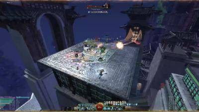
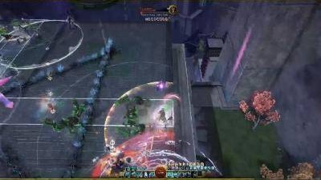
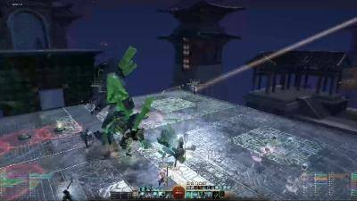
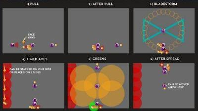
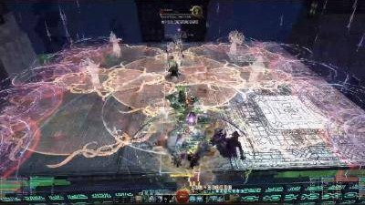
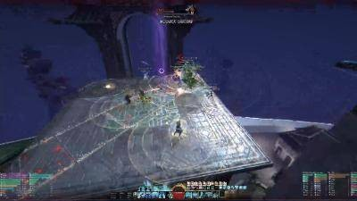
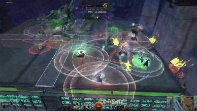
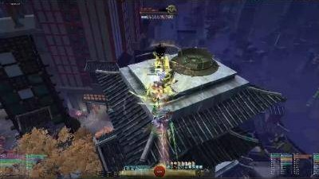

Li · 33–0 %alles überlappt: Spread → Green → Numbers
1
Cleave: nicht dodge- oder blockbar – Stabi oder dahinter
Im CM fehlt das Geländer, Knockback = Tod. Li cleavt ~5 s nach dem Aufladen ohne Telegraph. Wer nicht hinter dem Boss steht (Spread, Green), braucht Stabi: „Stand Your Ground!“, Mantra of Liberation/Concentration – in beiden Subgruppen.
2
Greens überall: je 3 Spieler
Weniger als 3 im Kreis → ganzer Squad down. Green-Träger bleibt mit der Gruppe hinter dem Boss. Dieselben Spieler dürfen mehrere Greens abdecken.
3
Numbers: 5 Ziele, 2. Treffer = Tod
Explosion gibt Extreme Vulnerability und legt eine tödliche rote AoE. Treffer einfach tanken (nicht dodgen – sonst falsche Ablage), an flachen Kanten ablegen, nicht in Ecken.
4
Trio: Kiter, Pools, Ghosts
Enforcer am Spawn kiten (Virtuoso/Scourge). Mindblade: 2 Spieler legen je 5 tödliche Pools an die kurzen Seiten. Ghosts: Überlappung = Tod.
5
Spreads: 4 große Kreise
Die 4 nächsten Spieler; in 2 Kreisen = down. Genau einer darf bei der Gruppe bleiben. Stabi beim Cleave zünden.
6
Mech Rider & Sniper: Equalize steuern, Mech immer tanken
Über 20 Stacks Equalization Matrix → Boon-Corrupt (Fear!) → Cleanses bereit, gezielt bei den Mech-Numbers auslösen. Der Mech braucht immer einen Tank, sonst Barrage + Jade Lob. Ricochet: nicht blockbar, 3 Schüsse – nie in den roten Kreis des Ziels; Ziel geht in die Ecke, Heiler überheilen. Snipe: erst Green auflösen, dann Zip Line und CC.

③ Numbers verteilen

④ Mindblade-Pools ablegen⑤ Li-Spread in der Ecke

⑥ Ricochet-Ziel überheilen
Details zum Nachschlagen
Minister Li · 100–66 % & Trio
Numbers: Wellen in aufsteigender Reihenfolge

Positionen im Trio (Hardstuck-Grafik)

Ritualist: 5 bzw. 4 Ghosts + 2 Greens
Muster wie NM, plus Green: Green+Cleave Mitte → Dash Ecke → Green+Cleave zur Mitte → Dash Mitte → Numbers.
Unmarkierte Spieler sind sicher, auch wenn eine Welle durch sie läuft – Abstand zu Markierten halten.
Nach dem Ablegen der AoE einfach rausgehen – der Schaden setzt verzögert ein.
Reihenfolge: Mindblade (Ritualist mitcleaven) → Ritualist → Enforcer. Mindblade und Enforcer nicht tethern lassen.
Bladestorm: 2 Schichten (außen, dann rot innen); Fireballs geben Debilitated → hinter den schwarzen Linien oder beim Ritualist stehen.
Slam: trifft im CM den ganzen Squad – verteilen; in 2 AoEs = down.
Unstable Bladestorms: 6 wandernde AoEs mit Infirmity – rausgehen, zurück-dodgen.
5 Ghosts: Gruppe bleibt am Ritualist-Spawn, Kiter bringt Enforcer zur Gegenseite. 4 Ghosts: in einen Safe Spot unter einem Ghost.
Lightning Storm strippt Boons – ausweichen, Firebrand gibt Aegis per Tome.
Li · 66–33 % · Mech Rider & Sniper

Spread + Cleave in der Ecke

Mech: Spread + 2 Greens beim Pushback

Snipe: rote Linie = Sofort-Tod
Ablauf: Dash Ecke → 2× Green+Cleave → Dash Ecke → Spread+Cleave (2×), dann Mitte + Numbers.
Supports können die Spreads gezielt ködern, Boons geben und dann raus.
Gruppe startet beim Sniper – außerhalb der ~400er Pushback-Reichweite; Mech von dort aus Range schlagen.
Minen mit Blocks/Dodges abräumen. Mech-Numbers: Float, 2. Treffer = Tod → verteilen, dodgen/blocken.
Tank: vor dem Mech, Richtung obere Plattform drehen; nach dem 1. von 2 Autos kurz umpositionieren.
Sniper teleportiert auf eine Ecke mit Zip Line; Bar brechen, sonst tötet der Laser alle in der Linie.
Green zuerst in der Ecke nächst zum Sniper auflösen – auf der Zip Line zählt man nicht als „im Green“.
Li 33–0 %: Reihenfolge immer Spread → Green → Numbers; Stabi für Green+Spread+Cleave sparen.
Klassen & Rollen
Daten: GW2 Wingman, Challenge Mode, „Balance Patch November 2026“, Stand 24.11.2026 · Minister Li: Erfolgsquote 28,3 %, Median-Kill 6:57 min · Ø-DPS nur Specs mit ≥ 0,5 % Anteil
Am häufigsten gespielt (CM)
Spec
Anteil
Virtuoso
22,7 %
Mechanist
17,3 %
Troubadour
9,4 %
Scourge
6,1 %
Tempest
4,8 %
Firebrand
4,7 %
Chronomancer
4,3 %
Harbinger
3,8 %
Deadeye
2,5 %
Specter
2,5 %
Höchster Ø-DPS (CM)
Spec
Ø DPS
Top
Galeshot
32.450
37.271
Deadeye
30.226
41.109
Weaver
30.154
30.732
Virtuoso
29.102
38.004
Mechanist
28.916
38.372
Willbender
28.649
36.104
Berserker
27.787
35.990
Harbinger
26.605
35.715
Renegade
25.228
32.046
Amalgam
24.707
30.400
Rollen-Empfehlung (abgeleitet aus Beliebtheit + Ø-DPS)
Rolle
Specs
Warum
DPS sicher & beliebt
Virtuoso, Mechanist, Scourge, Tempest
Am häufigsten in den CM-Logs – bewährt für diese Mechaniken.
Große Spanne zwischen Ø und Top-DPS → als Support und als (Boon-)DPS gespielt.
Heal-Support
Troubadour, Paragon, Luminary, Druid, Catalyst
Ø-DPS unter 3,5k → in CM-Logs praktisch nur als Heiler/Support.
Komp-Tipp: Laut Wingman führen Virtuoso (Pierce, 1200 Range – Hardstuck-Tipp für Kiter/Mech-Tank) und Mechanist. Hardstuck empfiehlt Heal-Firebrand und Condi-Scourge für Ranged-Heal und Barrier beim Ricochet; Stabi muss in beiden Subgruppen verfügbar sein.
Klassentipps – worauf du achten musst
Mechanik-Bezug aus dem Guide; die Klassenhinweise sind allgemeine Spieltipps. Für die neuesten Elite-Specs (z. B. Troubadour, Ritualist, Paragon, Luminary, Conduit, Evoker, Antiquary, Galeshot, Amalgam) gelten v. a. die Klassen-Grundregeln – prüfe die konkreten Skills im aktuellen Build.
Wächter
Firebrand · Luminary · Willbender · Dragonhunter
Heal-Firebrand: Mantra of Liberation + Stalwart Speed = Stabi.